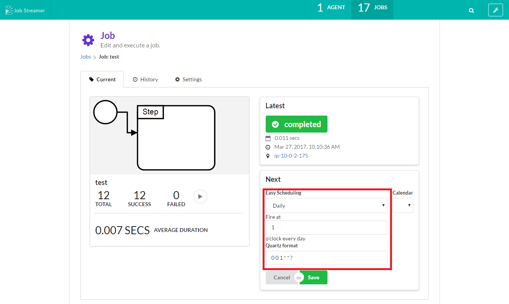

Scheduling
Scheduled execution
You can automatically execute job registrationing schedule using quartz scheduler.

Create a calendar
1.Go to calendar page from right menu at top page.

2.Push new button.

3.Create a calendar
Set calendar
You can control job execution setting calendar with quartz scheduler.